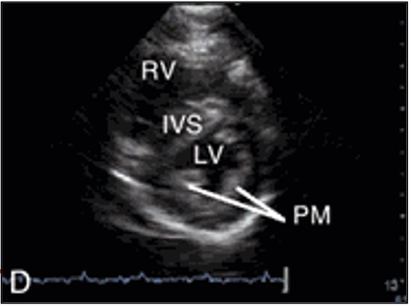
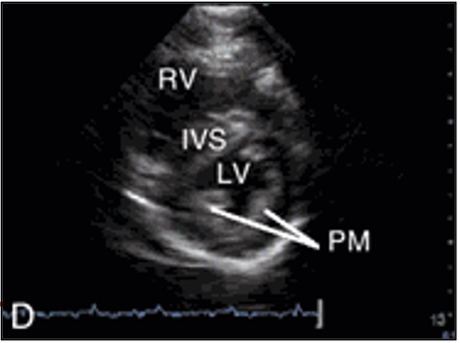
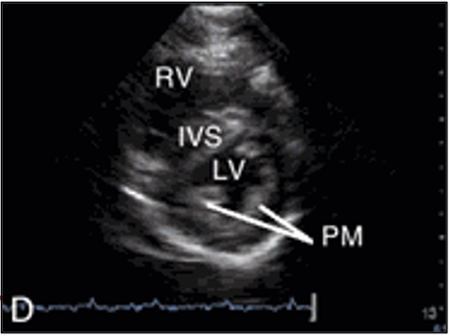

POCUS SIMULATOR Cardio Practice
Left of Sternum
3rd Intercostal Space
5th Intercostal Space
Mid-Clavicular Line
Midline Below Xiphoid
Right of Midline Below Costal Margin
Enable Orientation
Set Neutral Orientation
Alpha (Z):
0
Beta (X):
0
Gamma (Y):
0

 
